Porto-Icon-Boxes Documentation
Table of Contents
Overview
The Porto-Icon Boxes component allows you to display content with custom icons, enhancing the visual presentation of your website. It offers multiple design options, sizes, colors, and alignments, allowing full customization to fit any style. Porto defines the appearance and behavior, while its implementation is managed through OpenContent, providing flexibility in configuration.
For more details, check out the Porto-Icon-Boxes repository on GitHub or the Porto documentation.
Usage Example
Edit

Properties
| Field Name | Type | Description | Required |
|---|---|---|---|
| ModuleTitle | Text | The title of the module. | No |
| Items | Array | A collection of items to display in the icon boxes. | Yes |
| Title | Text | The title of the item. | Yes |
| Content | WYSIWYG | The content or description of the item. | Yes |
| Icon | Text | The icon for the item. Example: fab fa-android. Find values at FontAwesome. |
No |
| ButtonText | Text | The text for the button associated with the item. | No |
Settings


Settings Properties
| IconBoxesType | Setting | Type | Description |
|---|---|---|---|
| Classic | Display Axis | Select |
Defines the display axis of the icon boxes.
|
| Content Containers | Select |
Specifies the number of content container rows.
|
|
| Uppercase Title | Checkbox |
Applies uppercase styling to the title.
|
|
| Enable Animations | Checkbox | Enables animations for the icon boxes. Options:
|
|
| Icon Position | List |
Allows you to set the icon position.
|
|
| Featured Boxes Style | Select |
Defines the style of featured boxes.
|
|
| Color | Select |
Specifies the color of the icon boxes.
|
|
| Featured Box Effect | Select |
Defines flat effects for featured boxes.
|
|
| Full | Uppercase Title | Checkbox |
Applies uppercase styling to the title.
|
| Feature Box Full Style | Select |
Defines the full style of feature boxes.
|
|
| Color | Select |
Specifies the color of the icon boxes.
|
|
| Simple | Uppercase Title | Checkbox |
Applies uppercase styling to the title.
|
| Enable Animations | Checkbox | Enables animations for the icon boxes. Options:
|
|
| Feature Box Style | Select |
Specifies the style of feature boxes.
|
|
| Reverse Content | Checkbox |
Reverses the content layout.
|
|
| Color | Select |
Specifies the color of the icon boxes.
|
Views
Below are examples of the different styles and configurations available for the Porto-Icon-Boxes component. Each style is customizable and can be adapted to your design needs.
Right Icon:
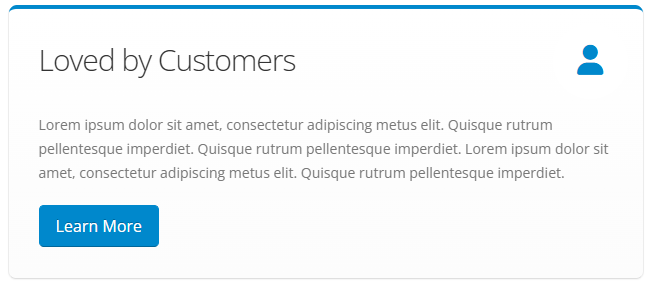Left Icon:
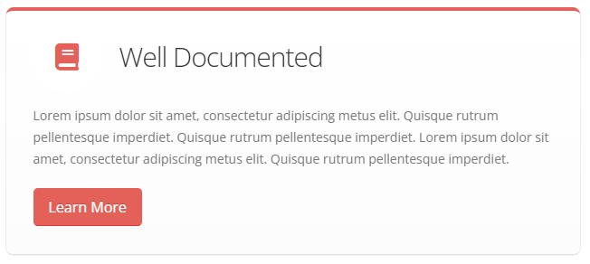Icon with Divider:
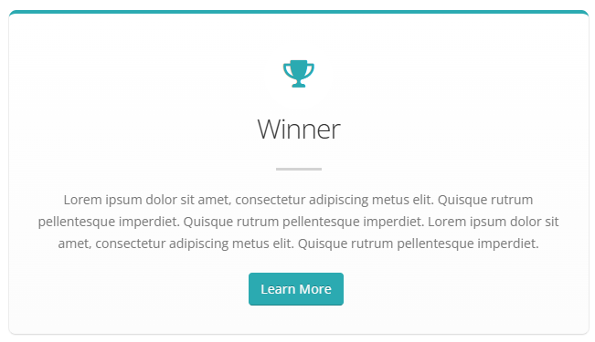Icon with Bottom Divider:
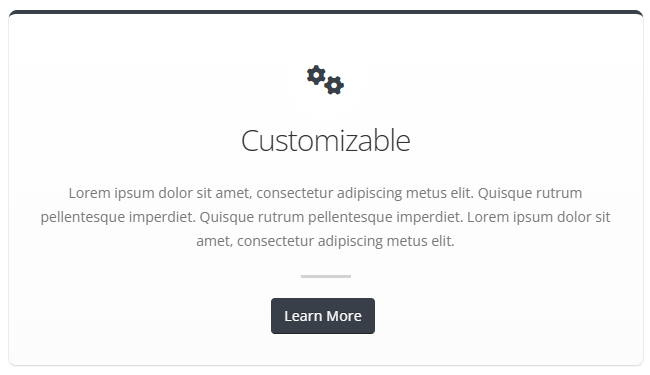Inset Border:
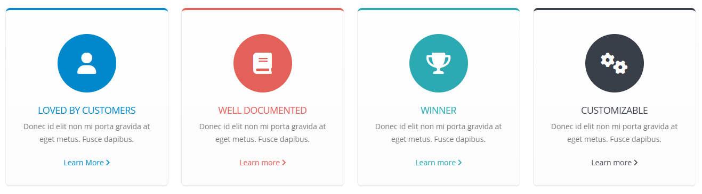Outset Border:
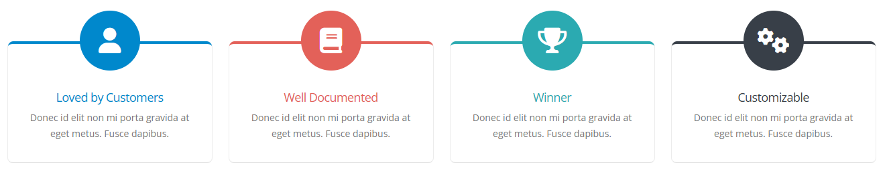Box Shadow with Border:
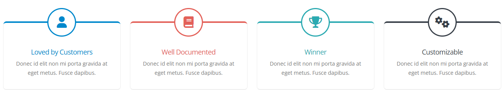Box Shadow:
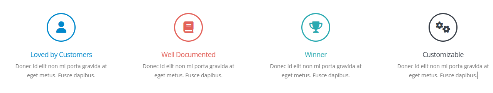Style 1:
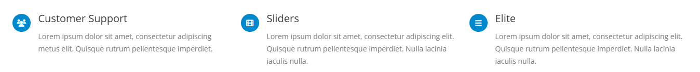Style 2:
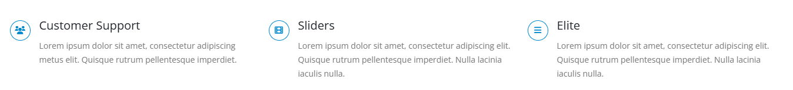Style 3:
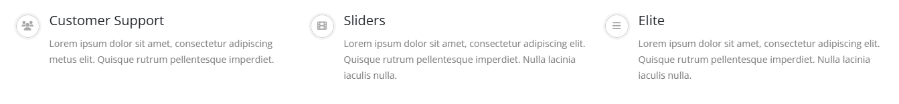Style 4:
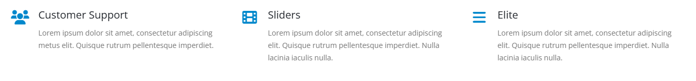Style 5:
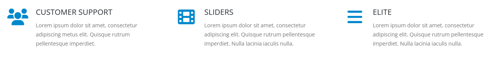Style 6:
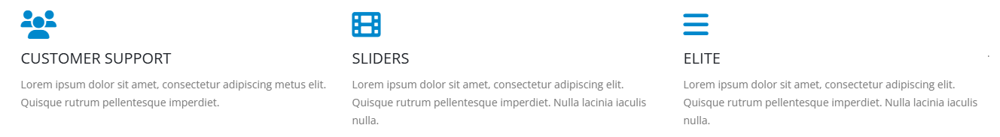Style 7:
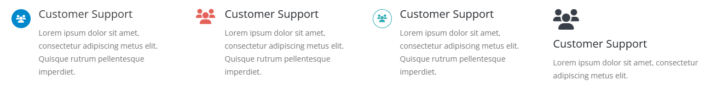Colors:

Full Width:

Reverse:

Normal:

Notes
ModuleTitle: The title of the module (optional).Items: A collection of items to display (required).Title: The title of each item (required).Content: The description or content of each item (required).Icon: The icon for each item. Use values from FontAwesome (optional).ButtonText: The text for the button associated with the item (optional).